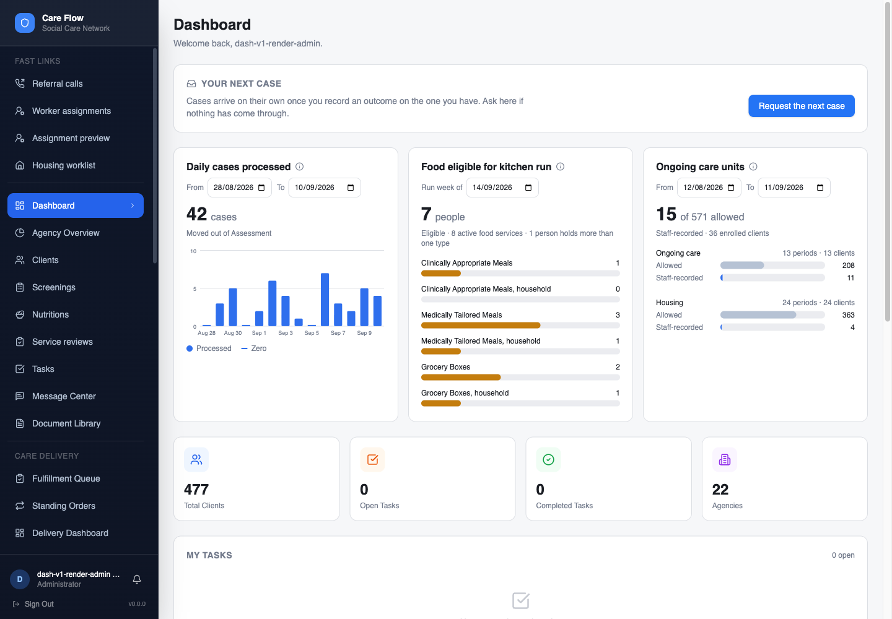
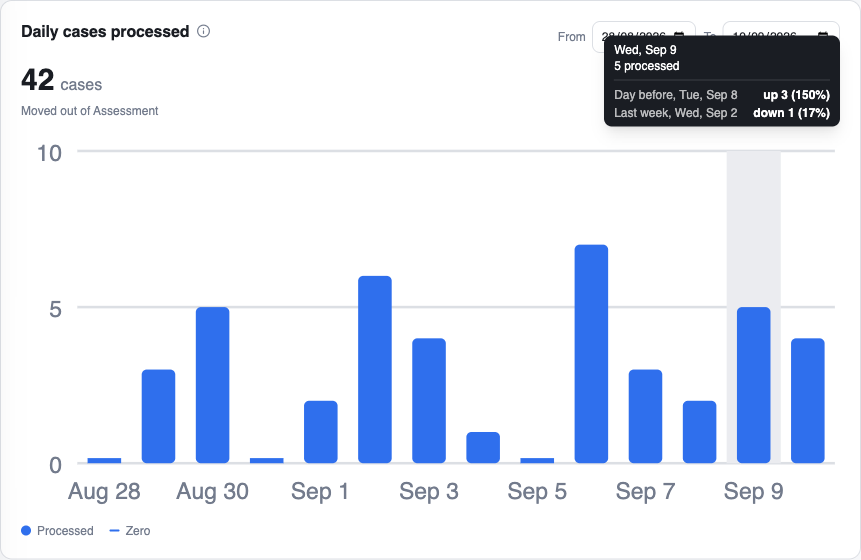
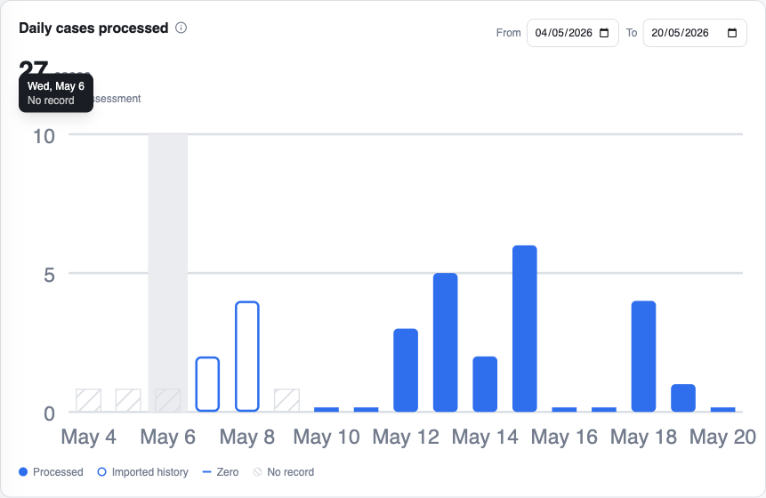
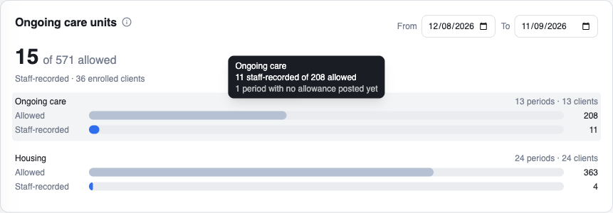
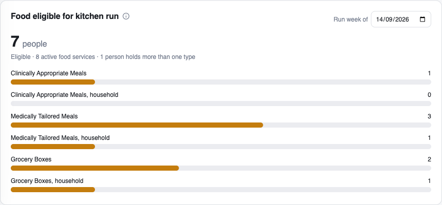
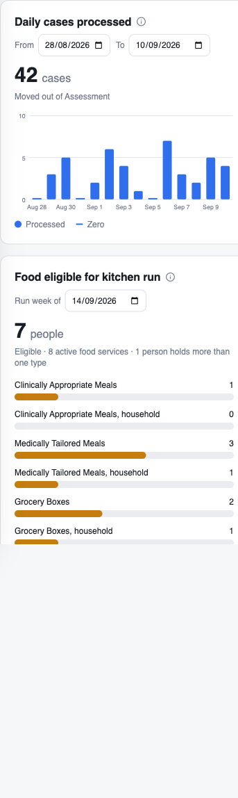

Is this more useful than the last one?
If something is still missing, say so in the notes.
Pick one answer.
Design preview for AK
Updated based on your notes. Three panels, the colours back, and less text on the page. Tell me if this one is more useful.
Your answers stay in this browser until you copy or export them. Nothing is sent automatically.
The whole picture
The dashboard you use today is unchanged underneath. Above it: cases by day, who is eligible for the next kitchen run, and ongoing care allowed against what staff recorded. The small i after each title holds the definitions, so the panels themselves stay short.

Open this screenshot full sizeIf something is still missing, say so in the notes.
Pick one answer.
Cases by day
Point at a day for its count, the day before, and the same weekday last week, each with its date.

Open this screenshot full sizeHow far back
Day by day only goes back to the day the log starts. Outlined bars are imported history. Hatched marks are days with no record, and they are not counted as zero.

Open this screenshot full sizeOngoing care
You said this is where the biggest gap is. Each care type shows the units allowed for the period and the units staff wrote down. Staff notes are not proof the visit happened or that anyone was billed.

Open this screenshot full sizeThe one about work we could bill for but are not doing.
Pick one answer.
Food
Who qualifies for the next kitchen run, by food type, with the full type names. Nothing comes back from the kitchen to say a box arrived, so this panel cannot show what was delivered.

Open this screenshot full sizeUntil delivery comes back to us, eligible is all this panel can honestly say.
Pick one answer.
On a phone
The panels stack and stay readable on a phone.

Open this screenshot full sizeA design preview on a test copy with made-up numbers. Nothing here is live for staff, and Allie has not seen it. Eligible for food is not food delivered, and units staff recorded are not confirmed as delivered or billed. The red flag for billed against serviced is not here yet, because we only hold one side of that comparison today.
Add any overall comments, concerns, or questions.
Copy or export your answers and send them to Julien. Nothing is sent automatically.